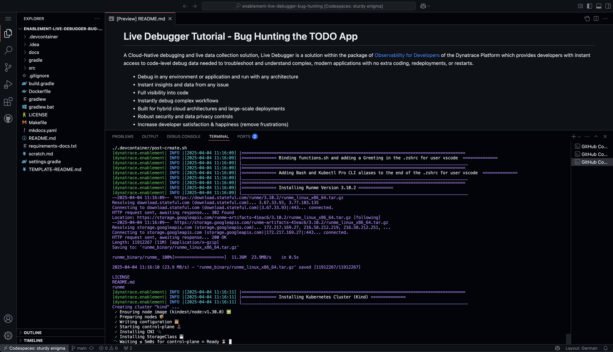
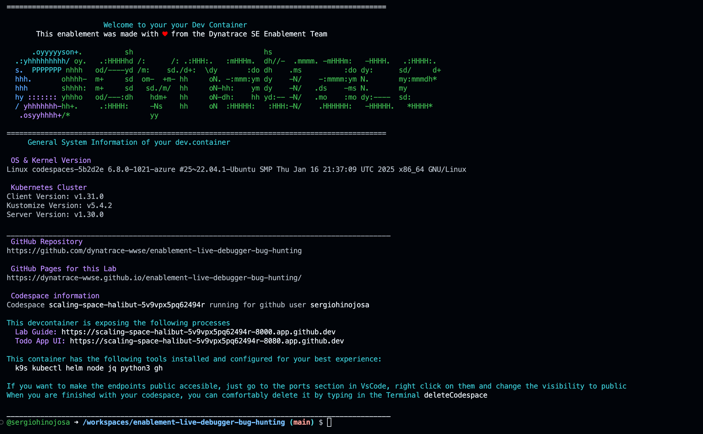

Codespaces
Launch GitHub Codespaces#
GitHub Codespaces provides the fastest way to get started with the BizObs Journey Simulator. The environment comes pre-configured with all dependencies, extensions, and integrations ready to use.
Recommended Approach
Codespaces eliminates setup complexity and provides a consistent, cloud-based development environment perfect for demos and learning.
🚀 Quick Launch Steps#
1. Access the Repository#
Navigate to the BizObs Journey Simulator repository:
2. Create Codespace#
- Click the green "Code" button
- Select the "Codespaces" tab
- Click "Create codespace on main"
- Wait for the environment to initialize (2-3 minutes)

3. Automatic Configuration#
The Codespace automatically: - ✅ Installs Node.js 18+ runtime environment - ✅ Installs npm dependencies for the BizObs application - ✅ Configures port forwarding for web interface (8080) and services (8081-8120) - ✅ Sets up VS Code extensions for optimal development experience - ✅ Initializes the application with core services running

🔧 What's Pre-Configured#
Development Environment#
- Node.js Runtime: Version 18+ with npm package manager
- VS Code Extensions: Debugging, JSON formatting, HTTP client tools
- Terminal Access: Full bash terminal for command execution
- File System: Complete repository access with editing capabilities
Application Stack#
- Main Application: Business Observability Generator on port 8080
- Core Services: Three essential services (Discovery, Purchase, DataPersistence)
- Dynamic Port Management: Automatic port allocation for generated services
- Service Health Monitoring: Built-in health checks and status reporting
Port Configuration#
The Codespace automatically forwards these ports:
🌐 Accessing Your Application#
Web Interface#
Once the Codespace is ready:
- Look for the notification: "Your application running on port 8080 is available"
- Click "Open in Browser" or navigate to the forwarded URL
- Verify you see the Business Observability Generator welcome page
Alternative Access: - Use the Ports tab in VS Code - Click the globe icon next to port 8080 - Copy the public URL for sharing
API Endpoints#
Test the API endpoints directly:
# In the Codespace terminal:
curl http://localhost:8080/api/health
curl http://localhost:8080/api/journey-simulation/health
🔍 Verify Installation#
1. Application Health Check#
Expected Response:
{
"status": "ok",
"timestamp": "2025-11-28T...",
"mainProcess": {
"pid": 1234,
"uptime": 45.2,
"port": 8080
},
"childServices": [
{
"service": "DiscoveryService-DefaultCompany",
"running": true,
"pid": 1235
}
]
}
2. Core Services Status#
Expected Output: Should show 3+ Node.js processes running
3. Port Allocation#
Expected Output: Ports 8080-8083+ should be in use
🎯 Quick Test Journey#
Create Your First Journey#
Use the web interface or API to create a test journey:
Via Web Interface:
1. Navigate to the forwarded port 8080 URL
2. Click "Get Started"
3. Fill out the customer details form:
- Company Name: Codespace Test Corp
- Domain: test.codespace.com
- Industry Type: Technology
- Journey Type: Environment Validation
Via API (in terminal):
curl -X POST http://localhost:8080/api/journey-simulation/simulate-journey \
-H "Content-Type: application/json" \
-d '{
"companyName": "CodespaceTestCorp",
"domain": "test.codespace.com",
"industryType": "Technology",
"journey": {
"companyName": "CodespaceTestCorp",
"domain": "test.codespace.com",
"industryType": "Technology",
"journeyType": "Environment Validation",
"journeyDetail": "Codespace Setup Test",
"steps": [
{"stepName": "Setup", "description": "Environment setup verification"},
{"stepName": "Validation", "description": "System validation check"}
]
},
"journeyId": "codespace_test_001",
"customerId": "test_001"
}' | jq .
Expected Result: - New services created and running - Complete journey response with business metadata - Services visible in process list
🛠️ Troubleshooting#
Common Issues#
Application Not Starting:
Port 8080 Already in Use:
Services Not Creating:
Dependencies Missing:
# Reinstall dependencies
cd "/workspaces/bizobs-journey-simulator/BizObs Generator"
npm install
npm start
Advanced Configuration#
Custom Environment Variables:
# Set custom configuration (optional)
export MAIN_SERVER_PORT=8080
export SERVICE_PORT_RANGE_START=8081
export SERVICE_PORT_RANGE_END=8120
Development Mode:
🔗 Dynatrace Integration#
Connect Your Environment#
To see the business observability data in Dynatrace:
- Ensure your Dynatrace environment is configured (see Getting Started guide)
- Optional: Configure OneAgent if you want to see services in Dynatrace
- Run journey simulations to generate business events
- Verify data appears in Dynatrace BizEvents and Services views
Public URL Sharing#
The Codespace provides a public URL for sharing: - Copy the forwarded port 8080 URL from the Ports tab - Share with colleagues for collaborative demos - Use in Dynatrace synthetic monitoring (if desired)
Codespace Ready!
Your BizObs Journey Simulator is now running in a fully configured cloud environment. You're ready to start creating comprehensive customer journeys with business observability data.